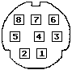

Previous
Next
TOC
Die Pinbelegung der LAN Portbuchse
1 Output Handshake (DTR, RS422)
2 Input Handshake (TRXCA external clock)
3 Transmit Data -
4 Ground
5 Receive Data -
6 Transmit Data +
7 Reserved
8 Receive Data +

Sollte es probleme beim Datenempfang geben, so müssen die beiden 100
Ohm Widerstände im Signalweg der Empfangsleitungen durch Drahtbrücken
ersetzt werden!
Eine Übersicht über die
Industrietauglichen Seriellen Schnittstellen
vom Typ RS-232, RS-422 und RS-485
Kapitel Die Pinbelegung der LAN Portbuchse, Seite 1